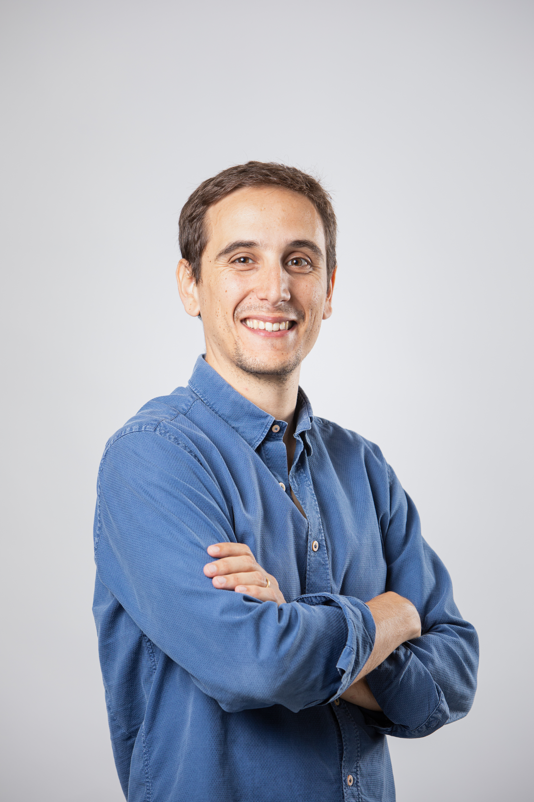
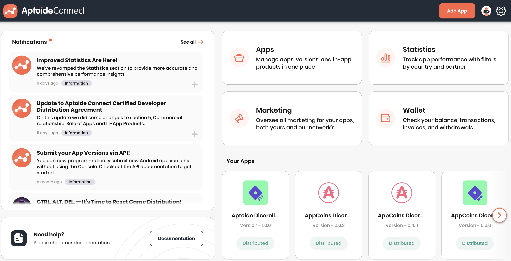

2021 — 2022
Technical Lead · Aptoide
Lisbon, Portugal

I am a technical product owner who bridges the gap between complex software architecture and market-facing product strategy. Combining a robust computer engineering background with a product-first mindset, I've spent over seven years owning the Aptoide Connect B2B ecosystem, first architecting its codebase, then directing its engineering standards, and now driving its product vision to support 100k+ active ecosystem users.
I specialize in transforming complex requirements into scalable, high-performing platforms. My approach to modern innovation, particularly AI, is fiercely pragmatic: I leverage rapid MVP development to quickly validate genuine trends, but enforce strict technical guardrails to ensure everything scales securely. We do not ship unscalable, low-quality features just because they are fast to build.
When building a two-sided B2B platform serving over 100k+ mobile developers and partners globally, the greatest risk is architectural fragility. If the foundation can't scale or adapt to changing ecosystem rules, the product fails.
Building a two-sided platform infrastructure from scratch to scale alternative Android distribution and monetization. The system had to solve two distinct operational needs simultaneously:

A centralized platform to submit and manage app lifecycles, integrate billing SDKs, manage pricing, launch marketing initiatives, and track distribution and monetization metrics across multiple channels.
A dedicated management platform allowing alternative channels to control, monitor, and optimize the monetization and distribution streams fed by our catalog.
I laid the first stone of the codebase and directed our engineering standards to ensure long-term stability from day zero.
Engineered robust client-facing Angular applications and high-throughput Express.js / Node.js services, backed by a scalable data tier using PostgreSQL and Redis.
Directly aligned our engineering priorities with business growth targets, embedding strict performance guardrails and security standards so the infrastructure could scale reliably under heavy corporate load.
I scaled my role from hands-on execution to strategic leadership, directing cross-functional teams and defining product strategy by bridging direct customer discovery with platform metrics and scalable architecture.
I regularly represent the company at major international events to meet face-to-face with our B2B clients. Uncovering their raw operational friction points allows me to keep our roadmap focused strictly on solving high-value partner pains rather than building meaningless features.
In a volatile market where alternative app store legislation (like Europe's DMA) changes rapidly, I direct our product strategy to instantly absorb global regulatory shifts, turning compliance into a fast-moving growth opportunity without disrupting platform quality.
I lead the strategic integration of AI and LLMs into our product and internal workflows. We use rapid MVP engineering to isolate high-value use cases, while enforcing strict technical guardrails to preserve security, enterprise scale, and code quality.
Spearheaded the automation of high-friction manual workflows for both internal operations and external corporate clients. This shifted engineering focus away from operational overhead and toward a scalable, low-overhead system architecture.
Directed the technical and product expansion of Aptoide Connect beyond Android, scaling our core ecosystem to fully support iOS app distribution and monetization for global developers.
The non-negotiable principles that dictate how I run cross-functional teams, design infrastructure, and guarantee B2B product success.
If a strategy is weak, wrong, or risky, I address it directly to save time and prevent building on a broken foundation. There is no ego involved. If my reasoning is challenged and proven wrong, I adapt instantly; if I am right, we align and execute.
Scalability is a commercial requirement, not a technical vanity metric. We build infrastructure to handle rapid market shifts and high-throughput corporate load, ensuring the business can instantly capture new revenue streams without platform degradation.
Interface design and fast features are commodities, anyone can vibe-code a basic UI over a weekend. True platform value lies in proprietary data loops, network effects, and sticky B2B integrations. If it doesn't compound our unfair advantage, we don't build it.
Deployment is not success. Every initiative must have its primary moving metric defined before a single line of code is written. We audit performance strictly at Day 30 and Day 90. If you don't measure, you are flying blind.
Specialized in Object-Oriented Programming and Telecommunications. Master's Thesis: Linux applications in C++ and Java for autonomous mobile robot navigation.
Successfully completed the first of two years in the 2nd Cycle of the Integrated Master. Advanced coursework focused heavily on object-oriented programming, signal processing, control systems, and telecommunications.
Focused on mathematics, physics, programming, control systems, signal processing, and telecommunications.